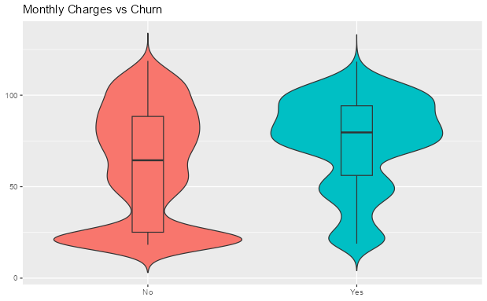
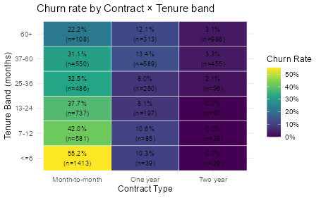

Telco Customer Churn — EDA
Introduction
Customer churn — the loss of existing subscribers — represents a major revenue risk for telecommunications companies. The goal of this exploratory analysis is to understand the behavioral and service-related factors driving churn, and provide modeling-ready insights for future predictive analysis (e.g., XGBoost, SVM). By examining distributions, feature relationships, and churn patterns, we aim to identify high-risk customer groups and actionable levers for churn reduction.
Data Overview
This dataset is from Kaggle. It comprises 7,043 customers of telecommunication company, each represented with multiple attributes including demographic details, service subscriptions, contract and billing information, usage metrics, and the target variable Churn (Yes/No) which indicates whether the customer left in the last month.
Data cleaning
The variable total_charges was initially stored as text due to blank entries and was converted into numeric format, after which a small number of rows with missing values in this field were removed to avoid distortions in distribution-based analyses. The senior_citizen variable was recoded from binary (0/1) into meaningful categorical labels (“Yes”/“No”) to improve interpretability. All cost-related and tenure fields were validated to ensure non-negative values, and no duplicate customer IDs were found.
Data exploration
The numeric features show distinct distributional patterns that reflect customer behavior and lifecycle. Tenure is highly right-skewed, indicating that a large portion of customers are relatively new to the service. Monthly charges follow a multi-modal shape due to the presence of different service package combinations, suggesting pricing segmentation. Total charges show a strong right-tail pattern, which is expected because long-term subscribers accumulate higher billing over time. These patterns support the business intuition that customer age and accumulated cost vary widely across subscribers.

The violin plot reveals that customers who churn tend to have higher monthly charges, concentrated around premium pricing tiers. This suggests price sensitivity may contribute to churn, especially if higher costs are not aligned with perceived service value. The spread of the churn group also indicates a wide range of pricing dissatisfaction across different service bundles. This variable shows strong potential predictive power for upcoming churn modeling.

Tenure displays one of the strongest churn signals: customers who churn are overwhelmingly clustered within the first few months of service. Churn rates decline steadily as tenure increases, and long-term customers (e.g., > 36 months) show significantly lower risk. This indicates that early-stage retention is critical — onboarding quality, expectation management, and early support interventions could directly reduce churn.

The correlation heatmap demonstrates a very strong positive relationship between total charges and tenure, which is mathematically expected since total charges approximate monthly charges × tenure. There is also a moderate positive correlation between monthly charges and total charges, but relatively weak correlation between monthly charges and tenure, suggesting price points are not tightly linked to how long a customer stays. This reinforces the idea that cost dissatisfaction impacts churn early rather than gradually over time.

Critique
The dataset lacks key behavioral and sentiment features such as customer support interactions, network performance, or satisfaction ratings, which are often strong churn indicators. Some variables, such as total_charges, are not fully reliable for new customers, and several categorical features contain overlapping levels (e.g., “No internet service”) that require careful pre-processing to avoid misleading patterns. In addition, the analysis is descriptive and therefore cannot establish causality — high churn among new or high-cost customers may be driven by underlying factors not captured here. Lastly, churn is moderately imbalanced, which may bias baseline models and necessitates appropriate evaluation metrics and sampling strategies.
Finding
Based on the EDA, tenure dominates churn risk. The short-tenure customers on month-to-month contracts churn far more than longer-tenure customers on one/two-year contracts. Customers who churn pay more on average, which indicate pricing is another important factor. In the following analysis, analyzing how cost and tenure interactively affect the churn is the key to find the pattern for churn rate. Moreover, the strong correlation between total charges and churn indicates that total charges reflect lifecycle instead of dissatisfaction.

Conclusion
The analysis reveals that customer churn in the telecommunication industry is primarily driven by early-stage disengagement and pricing pressure. New customers within their first few months of service and those paying higher monthly charges show the highest churn risk, particularly when combined with flexible month-to-month contracts and limited value-added services. These findings highlight critical opportunities for proactive retention, including improving onboarding experience, offering targeted incentives for high-cost subscribers, and promoting contract upgrades early in the customer lifecycle.